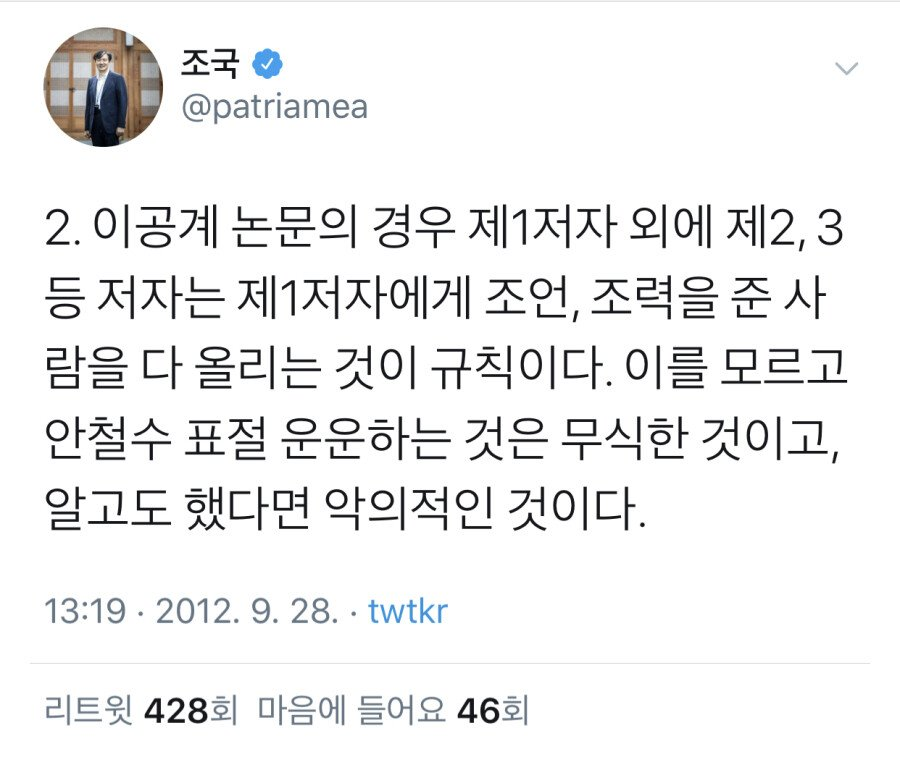
기자 간담회에서 본인은 법 전공이라 본인 딸의 이공계 논문은 잘 모른다고 했지만, 2012년에는 이공계 논문의 제1~3저자에 대해 친히 트윗까지 올렸다.

정작 9/2 조국 후보자의 몇 시간 전 일방적 통보로 열린 기자 간담회에서 조국 후보는 "모른다"와 "아니다"로 일관한다. 본인은 법 전공이라 그 외는 모른다며 딸의 논문 논란, 펀드 등 아무것도 모른다고 답변
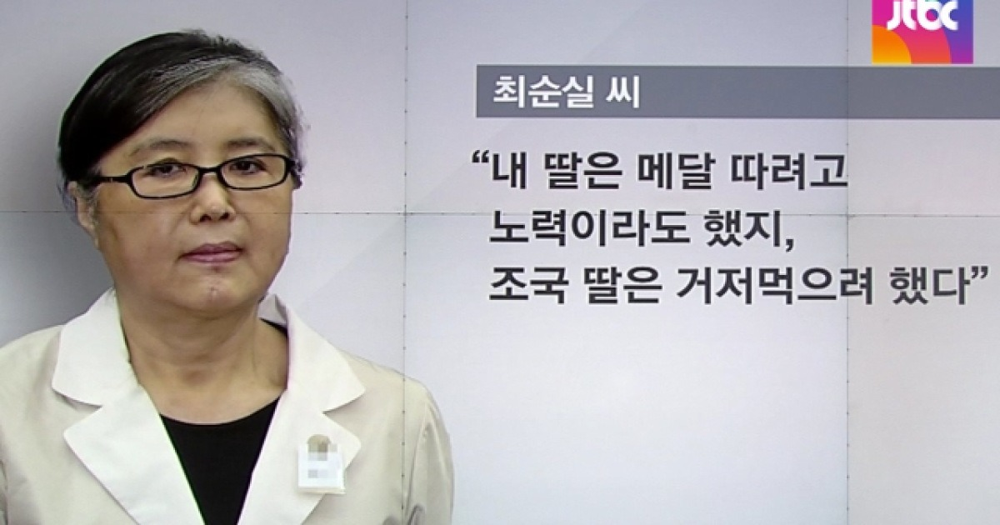
정유라는 승마 국내 랭킹 1위, 아시안게임 금메달이라도 있었으나, 조국 자녀는 자기소개서 허위 스펙, 권력 없이는 절대 불가능한 고2 문과생이 SCIE급 논문 1저자 등이 전부.
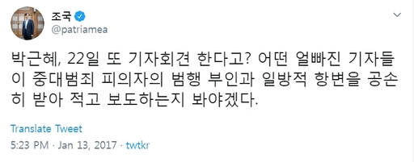
조국 후보자는 9월 2일, 일방적으로 기자들에게 몇 시간전 통보하고 기자회견을 열었다. 그리고 회견에서 "모른다"는 답변 반복
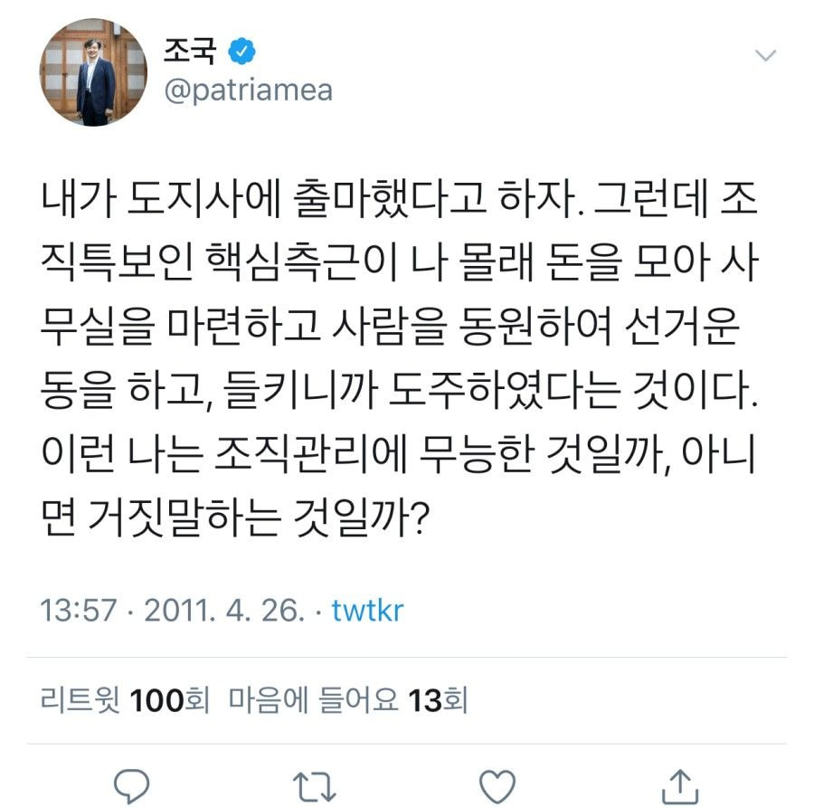
조국 후보자의 발언에 따르면, 본인은 몰랐다는 조국 후보자는 무능하거나 거짓말을 하고 있다.
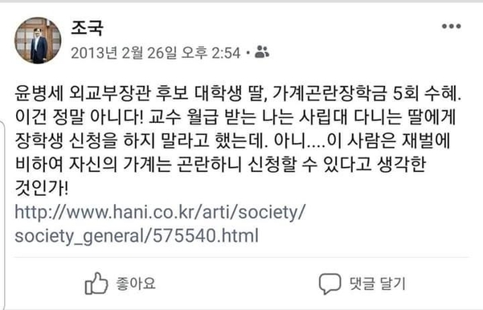
조국 후보자의 딸은 서울대 대학원에서 3학점 신청하고 장학금 2회 수령, 부산대 의전원에서 계속된 유급에도 다른 학생들이 1번 받을까 말까한 장학금 6회 수령
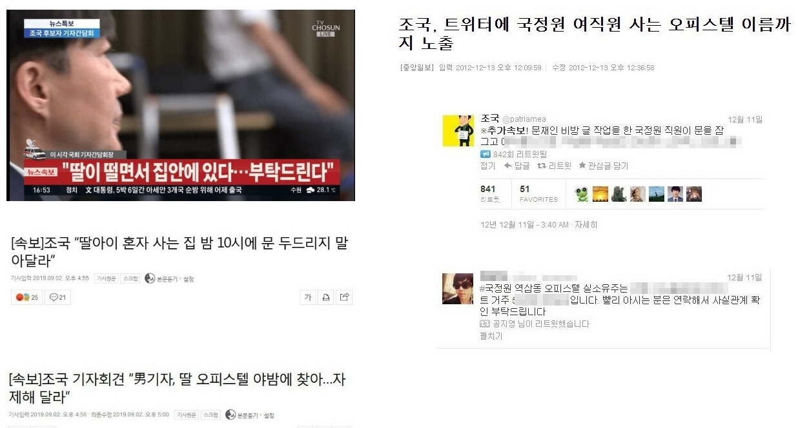
본인 딸 사생활을 보호해달라 하지만, 본인은 국정원 여직원의 오피스텔 이름까지 SNS에 게시

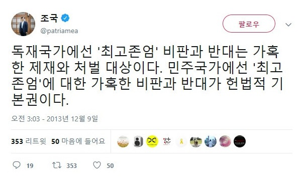
문재인 정부에서는 언론, 기업에 부정적 보고를 하지 말 것을 지시했으며, 민주당에서는 국민 상대로 고발팀 운영 중
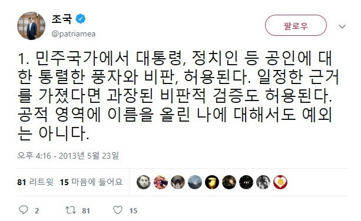
정작 민주당에서는 고발팀을 운영 중
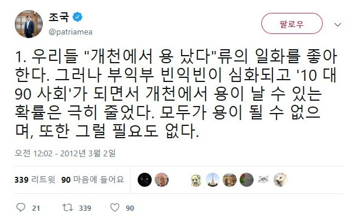
나는 용, 너희는 붕어, 개구리, 가재
피장파장의 오류. 최순실, 정유라와 똑같이 재판 받고 감옥 가라
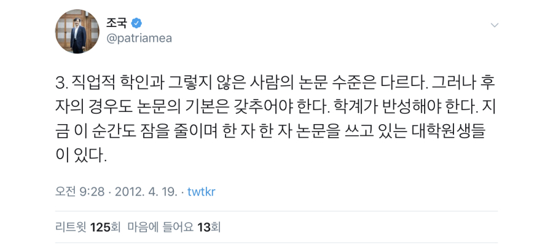
조국 후보자의 딸은 그 대학원생들이 1년 이상을 쓴 논문을 2주 인턴만에 제1저자를 앗아갔다
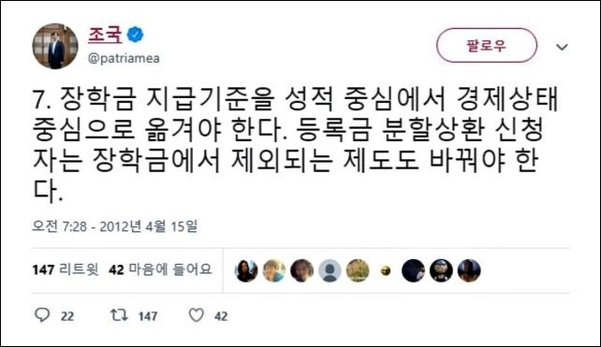
조국 후보자의 딸은 가계곤란 학생들도 1회 수여받을까 말까한 장학금을 계속된 유급에도 불구, 6회 수령
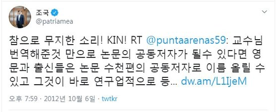
조국 후보자의 딸은 고2 문과생일 때 의대 석/박사들이 1년 이상, 270회 이상의 실험을 투자한 SCIE급 병리학 논문의 제1저자로 2주 인턴만에 "번역을 잘해줬다"는 사유로 등재
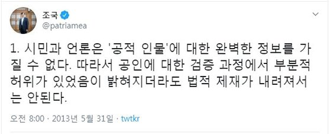
민주당에서는 아예 고발팀을 운영 중
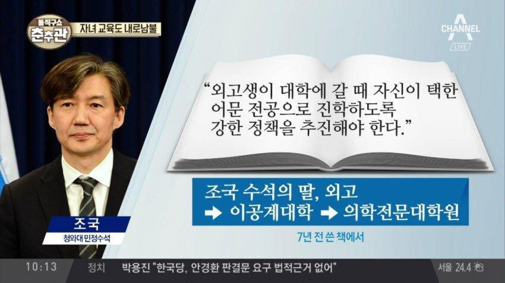
조국 후보자의 딸은 외고를 졸업 후 이공계 대학 진학, 의학전문대학원 진학
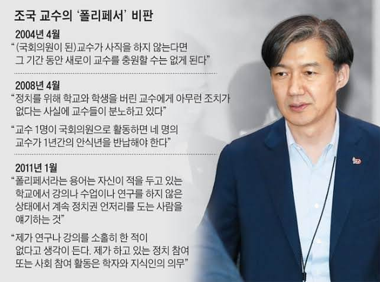
폴리페서의 셀프 디스
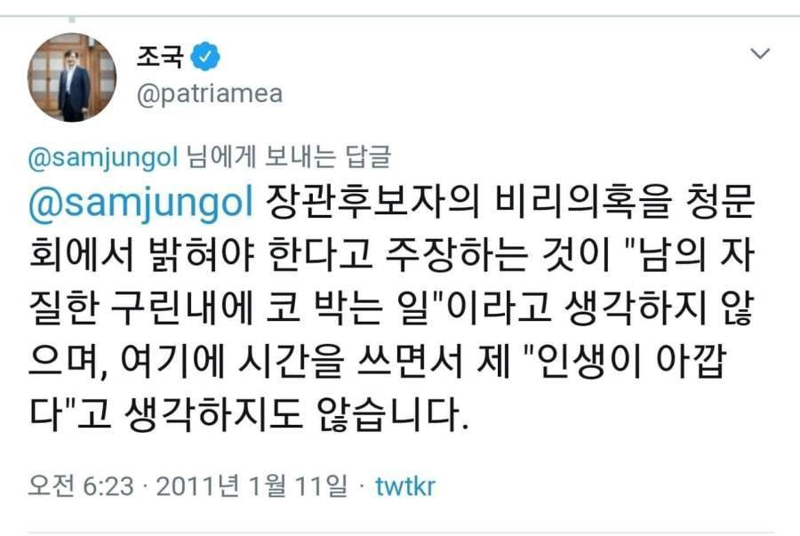
장관후보자의 비리의혹을 밝히자
조로남불 추가 등록
하루에도 조로남불, 조적조의 사례가 쏟아져나오고 있어 모든 사례를 운영진이 수집하기엔 힘에 부칩니다.
(대체 얼마나 많은 글을 썼길래 비슷한 것도 아닌 조국 후보자 본인에게 정확히 부합하는 자승자박이 이렇게나 쏟아져나올까요...)
여러분의 제보를 통해 업데이트됩니다.